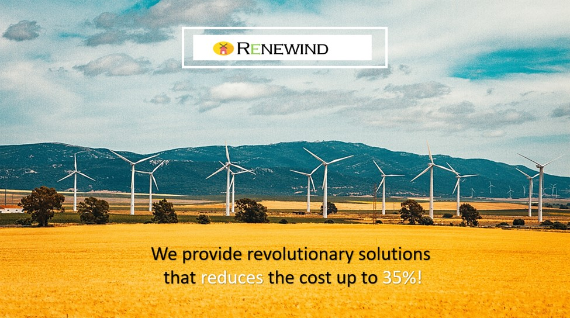

"ReneWind" is a company working on improving the machinery/processes involved in the production of wind energy
using machine learning and has collected data of generator failure of wind turbines using sensors. The objective
is to build various classification models, tune them and find the best one that will help identify failures so that
the generator could be repaired before failing/breaking and the overall maintenance cost of the generators
can be brought down.
Skills and Tools: Up and Downsampling, Regularization, Hyperparameter Tuning


Analyze the data of visa applicants, build a predictive model to facilitate the process of visa approvals, and based
on important factors that significantly influence the visa status recommend a suitable profile for the applicants for
whom the visa should be certified or denied.
Skills and Tools: EDA, Data Preprocessing, Customer Profiling, Bagging Classifiers (Bagging and Random Forest),
Boosting Classifier (AdaBoost, Gradient Boosting, XGBoost), Stacking Classifier, Hyperparameter Tuning using GridSearchCV,
Business Insights.

Analyze the stocks data, grouping the stocks based on the attributes provided, and sharing insights about the characteristics
of each group.
Skills and Tools: EDA, Kmeans Clustering, Hierarchical Clustering, Cluster Profiling.

Analyze the data of INN Hotels to find which factors have a high influence on booking cancellations, build a predictive
model that can predict which booking is going to be canceled in advance, and help in formulating profitable policies for
cancellations and refunds.
Skills and Tools: EDA, Data Pre-processing, Logistic Regression, Multicollinearity, finding optimal threshold using AUC-ROC Curve,
Decision Trees, Pruning.
Analyze the used devices dataset, build a model which will help develop a dynamic pricing strategy for used and refurbished devices,
and identify factors that significantly influence the price.
Skills and Tools: EDA, Linear Regression, Linear Regression Assumptions, Business Insights and Recommendations.

This project used statistical analysis, a/b testing, and visualization to decide whether the new landing page of an online news portal
(E-news Express) is effective enough to gather new subscribers or not. The simulated dataset has certain important metrics such as
converted status and time spent on the page that will help to conclude the effectiveness of the new landing page. Apart from that,
the dependence of conversion on the preferred language will also be analyzed in this project.
Skills and Tools: Hypothesis Testing, a/b Testing, Data Visualization, Statistical Inference.
The food aggregator company has stored the data of the different orders made by the registered customers in their online portal.
They want to analyze the data to draw some actionable insights for the business. Suppose you are hired as a Data Scientist in this
company and the Data Science team has shared some of the key questions that need to be answered. Perform the data analysis to find
answers to these questions that will help the company to improve the business.
Skills and Tools: Exploratory Data Analysis (Variable Identification, Univariate Analysis, Bi-Variate Analysis), Python.